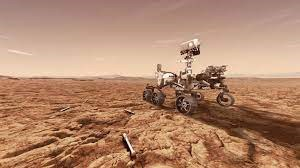

Saturno
Saturno, é o segundo maior planeta do sistema solar em massa e tamanho, o sexto planeta mais próximo em distância ao sol.
Últimos Artigos:

As Estrelas são corpos celestes que têm luz própria
Estrelas são grandes esferas de plasma, mantidas por sua própria gravidade. As estrelas emitem luz, calor e outros tipos de radiação em razão dos
Últimos Artigos:

As Estrelas são corpos celestes que têm luz própria
Estrelas são grandes esferas de plasma, mantidas por sua própria gravidade. As estrelas emitem luz, calor e outros tipos de radiação em razão dos
Marte vista de longe.
Consideravelmente menor que a Terra, Marte é o segundo menor planeta do Sistema Solar e o quarto mais próximo do Sol. O planeta tem uma grande importância na história, sendo visível a olho nu a partir do nosso planeta, ele é um dos países mais bem estudados pela astronomia.
A semelhança de Marte e Terra não é pequena, observada em diversos aspectos como as estações do ano e a aproximação do dia terrestre, as superfícies dos planetas se destacam por sua semelhança – os dois apresentam superfície sólida e rochosa, sendo a marciana mais árida do que a nossa. Porém a distância de 228 milhões de quilômetros do Sol faz com que sua temperatura seja consideravelmente mais baixa que a nossa, tendo temperatura média de -65ºC, e podendo chegar até a 143ºC.
Marte apresenta uma coloração avermelhada graças à enorme presença de óxido de ferro em sua superfície, sem mecanismos desenvolvidos a ponto de chegar à essa conclusão, os antigos associaram a vermelhidão do planeta com a cor de sangue, símbolo da guerra, logo o nomearam em homenagem ao deus romano da guerra – Marte. Diferentemente da Terra, que tem apenas um satélite natural – a Lua; Marte apresenta dois satélites naturais, as Duas Luas de Marte, Fobos e Deimos (medo e pânico, respectivamente, em grego). Os nomes das luas foram dados em homenagem aos filhos de Ares (Marte) e Afrodite (Vênus).
Rotação
Curiosamente, os movimentos de rotação de Saturno são menores do que o habitual, colocando em base seriam por volta de 10 horas, sendo algo difícil de determinar já que a concentração altíssima de nuvens de hidrogênio dificulta a visualização clara de Saturno.
Os anéis de Saturno
Visto da Terra, os anéis parecem sólidos, mas de perto, eles são faixas translúcidas feitas de incontáveis partículas, principalmente gelo, algumas rochas.
A baixa temperatura somada à fina e rarefeita atmosfera enfatizam as baixas chances de vida no planeta, porém, uma pesquisa da NASA realizada em 2000 revelou a presença de processos erosivos em Marte, o que torna quase certa a existência de água em Marte, e se tem água, a chance de haver vida ainda existe. O fato de serem perceptíveis processos erosivos e a presença da água ainda não ser confirmada, hoje em dia a teoria mais levantada é que houve vida no planeta vermelho sim, porém em um distante passado.
Nos dias de hoje, a humanidade já mandou sondas a Marte algumas vezes, retornando sempre com novas descobertas e materiais de natureza marciana para estudo, e conforme a tecnologia avança e novos dispositivos mais rápidos e eficientes são desenvolvidos, o nosso progresso no Planeta Vermelho aumenta. Tornando plausível dizer que a próxima década de avanços espaciais será decisiva para o rumo que a humanidade tomará.
Artigos relacionados

Sistema Solar
Das temperaturas escaldantes de Vênus até o maior vulcão do Sistema Solar em Marte: é hora de conhecer a [...]!

Marte
Das temperaturas escaldantes de Vênus até o maior vulcão do Sistema Solar em Marte: é hora de conhecer a [...]!

Urano
Das temperaturas escaldantes de Vênus até o maior vulcão do Sistema Solar em Marte: é hora de conhecer a [...]!
Jupiter
Das temperaturas escaldantes de Vênus até o maior vulcão do Sistema Solar em Marte: é hora de conhecer a [...]!
Plutão
Das temperaturas escaldantes de Vênus até o maior vulcão do Sistema Solar em Marte: é hora de conhecer a [...]!